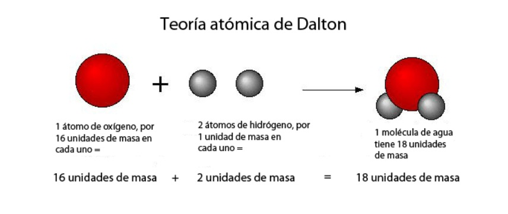
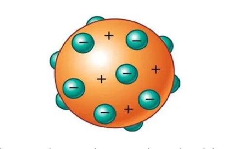
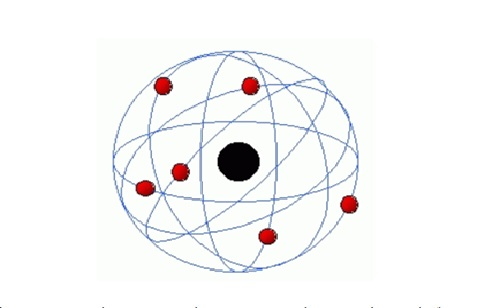
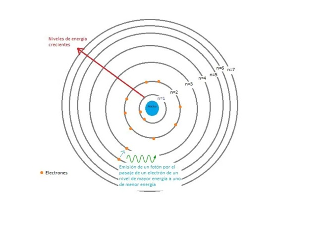
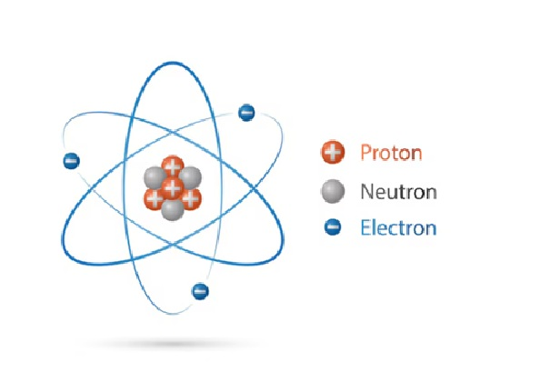
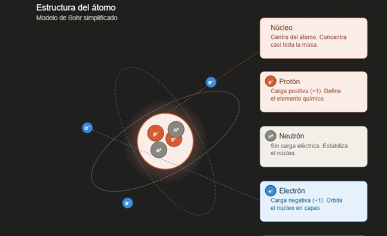

Unidad 【Número】: 【Título de la Unidad】
【Breve descripción de lo que aprenderás en esta unidad】
📌 Introducción
¿Alguna vez te has preguntado de qué está hecha la realidad que nos rodea? ¿Qué hay más allá de lo que nuestros ojos pueden ver, en lo más profundo de la materia? Esta unidad, titulada Modelos Atómicos, nos invita a emprender un viaje fascinante a través del tiempo y del pensamiento científico, desde las primeras intuiciones filosóficas en la antigua Grecia hasta las complejas teorías de la mecánica cuántica actual. Exploraremos cómo la idea del átomo —esa partícula que alguna vez se creyó indivisible— ha evolucionado drásticamente a través de los modelos de Dalton, Thomson, Rutherford y Bohr, cada uno surgido para explicar nuevos experimentos y resolver las limitaciones del anterior. Este recorrido no es solo una lección de historia; es la mejor demostración de cómo la ciencia construye, derriba y vuelve a construir sus explicaciones sobre el mundo natural.
Comprender estos modelos atómicos es fundamental, porque son los cimientos sobre los que se levanta toda la química moderna. Gracias a ellos podemos explicar por qué los elementos tienen diferentes propiedades, cómo se ordenan en la tabla periódica, por qué se forman los enlaces químicos y de dónde provienen los colores de los fuegos artificiales. Al finalizar esta unidad, no solo dominarás conceptos clave como partículas subatómicas, números cuánticos y configuración electrónica, sino que habrás desarrollado una herramienta de pensamiento esencial para el resto del curso: la capacidad de usar modelos mentales para explicar fenómenos invisibles. Prepárate para pensar en pequeño, porque entender el átomo es entender el mundo que nos rodea.
Objetivo general
Comprender la evolución histórica y conceptual de los modelos atómicos, identificando sus postulados, limitaciones y aportes, para explicar la estructura interna del átomo y su importancia en el desarrollo de la química.
Objetivos especificos
- Describir los postulados, ventajas y limitaciones de los modelos atómicos de Demócrito, Dalton, Thomson, Rutherford, Bohr y el modelo mecánico-cuántico.
- Diferenciar las partículas subatómicas fundamentales (protón, neutrón y electrón) en cuanto a su masa, carga y ubicación dentro del átomo.
- Explicar cómo los experimentos clave (tubos de rayos catódicos, gota de aceite de Millikan, lámina de oro de Rutherford, espectros atómicos) llevaron a modificar o reemplazar los modelos previos.
¿Qué son los modelos atómicos?
Los modelos atómicos son representaciones conceptuales, visuales o matemáticas que los científicos han creado para explicar cómo es la estructura interna del átomo y cómo se comportan sus partículas. Como el átomo es demasiado pequeño para ser visto incluso con los microscopios más potentes, los científicos a lo largo de la historia han propuesto diferentes modelos para intentar describirlo, basándose en experimentos indirectos y evidencias observables.
En otras palabras, un modelo atómico es como un "dibujo imaginario pero fundamentado" que nos ayuda a entender qué hay dentro de un átomo y cómo funciona, aunque no podamos verlo directamente.
tipos de modelos atomicos
Modelo de Dalton (1808) - La esfera maciza
El modelo atómico de Dalton, propuesto por el químico inglés John Dalton a principios del siglo XIX, fue el primer modelo científico basado en experimentos y no solo en especulaciones filosóficas. Dalton concebía el átomo como una esfera maciza, sólida e indivisible, similar a una pequeña canica o bola de billar, donde no existían partes internas ni espacio vacío. Según su teoría, cada elemento químico estaba formado por átomos de un tipo único y característico (con masa y tamaño propios), y los compuestos se originaban por la unión de átomos de diferentes elementos en proporciones numéricas fijas y sencillas. Aunque revolucionario para su época, este modelo quedó obsoleto cuando se descubrió que los átomos sí podían dividirse en partículas más pequeñas.

Modelo de Thomson (1897) - El pudín de pasas
El modelo de Thomson, propuesto por el físico británico J.J. Thomson tras descubrir el eqlectrón mediante experimentos con tubos de rayos catódicos, es conocido popularmente como el "budín de pasas" (o pastel de ciruelas). Thomson demostró que dentro del átomo existían partículas con carga negativa (los electrones), pero como el átomo en su conjunto era neutro, dedujo que también debía haber una carga positiva que equilibraba a los electrones. Su modelo propuso que el átomo era una esfera de carga positiva uniforme (como la masa del budín), dentro de la cual los electrones (las "pasas") estaban incrustados como si fueran semillas en una gelatina. Este modelo fue el primero en reconocer que el átomo tenía estructura interna y no era indivisible, aunque no explicaba correctamente experimentos posteriores sobre la distribución de la carga positiva.

Modelo de Rutherford (1911) - El sistema planetario nuclear
El modelo de Rutherford, desarrollado por el físico neozelandés Ernest Rutherford tras su famoso experimento de la lámina de oro, revolucionó la concepción del átomo. Al bombardear una lámina de oro extremadamente delgada con partículas alfa, Rutherford observó que la mayoría atravesaban la lámina sin desviarse, pero algunas rebotaban o se desviaban considerablemente. De esto concluyó que el átomo está compuesto principalmente por espacio vacío, y que en su centro existe un núcleo diminuto, denso y con carga positiva, donde se concentra casi toda la masa del átomo. Alrededor de este núcleo, los electrones (con carga negativa) giran en órbitas similares a como los planetas giran alrededor del Sol, de ahí que se le compare con un sistema planetario en miniatura. Su principal limitación era que no explicaba por qué los electrones no caían al núcleo debido a la atracción eléctrica, ni tampoco los espectros de luz característicos de cada elemento.

Modelo de Bohr (1913) - Órbitas o niveles de energía
El modelo de Bohr, propuesto por el físico danés Niels Bohr, fue un intento de corregir las deficiencias del modelo de Rutherford incorporando ideas de la naciente física cuántica. Bohr postuló que los electrones no podían girar en cualquier órbita alrededor del núcleo, sino únicamente en ciertas órbitas circulares permitidas o niveles de energía (como los peldaños de una escalera), cada una con un valor fijo de energía. Mientras un electrón permanecía en una de estas órbitas, no emitía ni absorbía energía; solo emitía o absorbía energía (en forma de luz) cuando "saltaba" de un nivel a otro, ya sea acercándose o alejándose del núcleo. Este modelo logró explicar con gran éxito los espectros de emisión del átomo de hidrógeno, pero fracasaba al intentar aplicarlo a átomos con más de un electrón, lo que demostraba que aún no era la descripción definitiva.

Modelo Mecánico-Cuántico (actual, ~1926) - Nubes electrónicas u orbitales
El modelo mecánico-cuántico es el modelo atómico actualmente aceptado por la comunidad científica, desarrollado por físicos como Schrödinger, Heisenberg y Dirac en la década de 1920. Este modelo abandona por completo la idea de que los electrones son partículas que siguen órbitas definidas; en su lugar, postula que los electrones poseen una dualidad onda-partícula, comportándose a veces como partículas y a veces como ondas. Como consecuencia del principio de incertidumbre de Heisenberg (que establece que no podemos conocer simultáneamente la posición y la velocidad exacta de un electrón), el modelo no habla de órbitas sino de orbitales, que son regiones del espacio alrededor del núcleo donde existe una alta probabilidad de encontrar al electrón, representadas como nubes electrónicas. Estos orbitales se describen mediante cuatro números cuánticos (n, l, m, s) que determinan su tamaño, forma, orientación y el espín del electrón. Es el modelo más preciso y completo hasta la fecha, ya que explica el comportamiento de átomos complejos, los enlaces químicos y es la base de toda la química y física moderna, aunque su comprensión requiere matemáticas avanzadas y desafía la intuición cotidiana.

Que es el ATOMO?
El átomo es la unidad básica de la materia, el bloque fundamental que constituye todo lo que nos rodea. La palabra "átomo" proviene del griego "atomos", que significa "indivisible", porque los antiguos filósofos griegos, como Demócrito, creían que el átomo era la partícula más pequeña e indivisible de la materia. Sin embargo, con el avance de la ciencia, se descubrió que el átomo sí tiene una estructura interna y está compuesto por partículas subatómicas: protones (con carga positiva), neutrones (sin carga) y electrones (con carga negativa). El núcleo del átomo, formado por protones y neutrones, concentra casi toda su masa, mientras que los electrones giran alrededor del núcleo en regiones llamadas orbitales. La disposición y número de estas partículas determinan las propiedades químicas y físicas de cada elemento, haciendo del átomo la piedra angular de la química y la física. En resumen, el átomo es la unidad fundamental que forma toda la materia, desde el aire que respiramos hasta las estrellas en el cielo.
>

TABLA PERIODICA
La tabla periódica es una herramienta fundamental en la química que organiza todos los elementos químicos conocidos de manera sistemática según sus propiedades y características. Fue desarrollada por el químico ruso Dmitri Mendeléyev en 1869, quien la diseñó para mostrar las relaciones periódicas entre los elementos. En la tabla periódica, los elementos se disponen en filas horizontales llamadas períodos y columnas verticales llamadas grupos o familias. Los elementos dentro de un mismo grupo comparten propiedades químicas similares debido a que tienen la misma cantidad de electrones en su capa externa. La tabla periódica no solo clasifica los elementos, sino que también permite predecir sus comportamientos químicos, sus estados de oxidación, su reactividad y sus propiedades físicas. Es una herramienta esencial para estudiantes y profesionales de la química, ya que proporciona una visión clara y organizada de la diversidad de los elementos y sus interacciones. En resumen, la tabla periódica es el mapa que guía a los químicos en el estudio de la materia y sus transformaciones.
 🎥 TABLA PERIODICA
🎥 ORGANIZACION Y CLASIFICACION DE LOS ELEMENTOS
🎥 TABLA PERIODICA
🎥 ORGANIZACION Y CLASIFICACION DE LOS ELEMENTOS